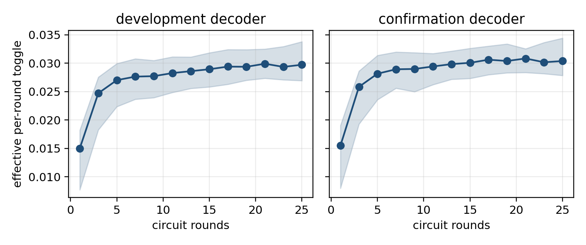

Effective-Toggle Persistence for Rolling Forecasts of Surface-Code Logical Error Rates
A rolling forecast for surface-code logical error rates that preserves odd-parity accumulation and stores one effective toggle per hardware stratum.

Method
For a logical error rate measured after the latest available round, the estimator applies the inverse odd-parity map and evaluates the same parity curve at future depths. Exactness holds under stationary toggles; under drift, the forecast error is bounded by the future depth multiplied by the change in effective toggle.
Evidence boundary
The study uses only authenticated hardware summaries. Tensor-network rates define development and belief-matching rates define confirmation. The conclusion is limited to aggregate forecasting on this campaign and does not assert transfer across devices or calibration dates.